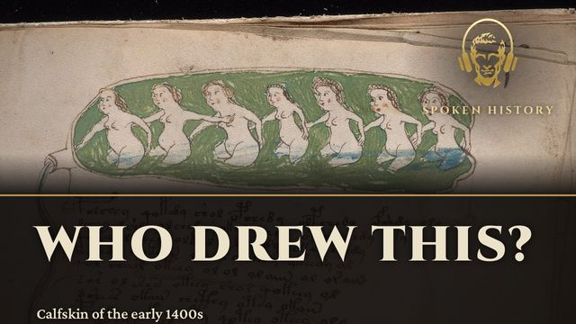
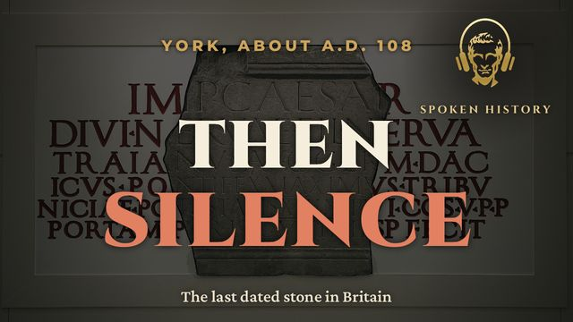
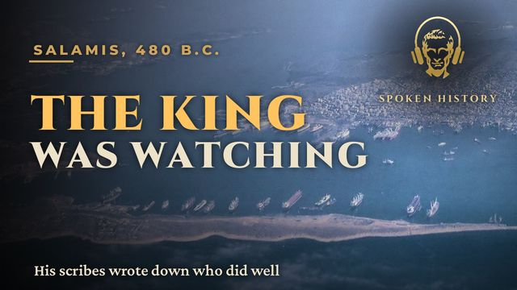
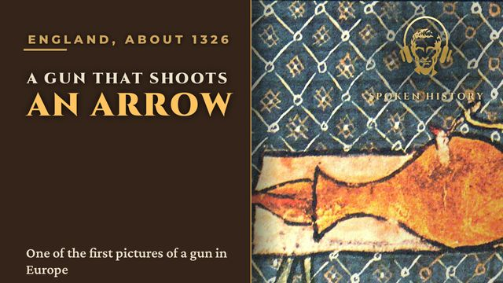
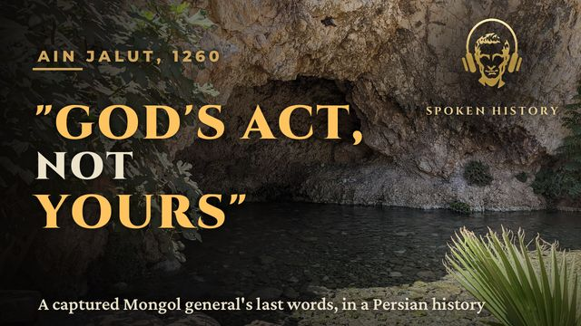
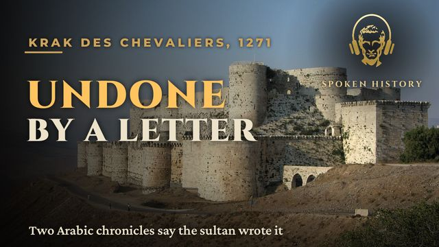
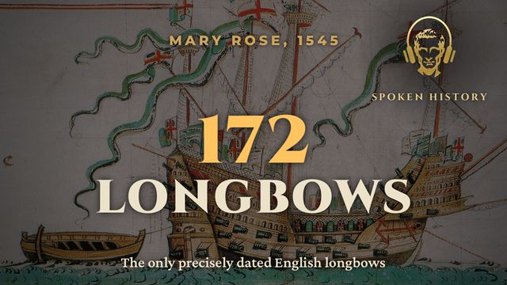
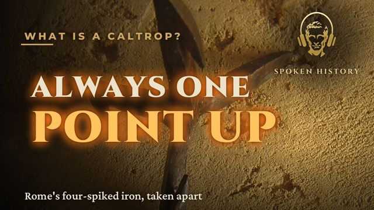

18
How Weapons Evolved: From Sling to Cannon
- Script
- Images
- Animation
- Article
- Fact-check
- Narration
- Render
- Review
- Release

The Voynich manuscript, Beinecke MS 408 at Yale, is a small book of some 240 pages of calfskin, drawn on almost every page, in a script found in no other book. In 2009 the University of...
Read the storyA.D. 600 to A.D. 1510For about nine hundred years, the piece we call the queen moved one square at a time; in Persian and Arabic chess it was the king's counsellor. The oldest clear Indian words about the game...
Read the story
The Sea Peoples is the name French scholars of the nineteenth century gave to the peoples an Egyptian pharaoh said had come from islands, from across the sea, as the Bronze Age was ending....
Read the story
Around A.D. 108 the Ninth Legion, Hispana, put its name on a great stone at York. It is the last dated trace of the legion anywhere in Britain; in 122 the Sixth Legion arrived from the...
Read the story
In July 1518 a woman in Strasbourg began to dance; within four weeks, a family chronicle of the time says, more than four hundred people were dancing. The physicians called it a natural...
Read the story
The Altar Stone lies at the heart of Stonehenge: a six tonne slab of pale green sandstone, broken and pinned under two fallen stones of the Great Trilithon, that nobody is allowed to...
Read the story Premiere soon
Premiere soonIn 2013, between the stones that sealed the boat galleries of a harbour of King Khufu at Wadi al-Jarf, on Egypt's Red Sea coast, Pierre Tallet's team found the oldest inscribed papyri ever...
Read the storyA.D. 1250 to A.D. 1868Easter Island's famous heads have bodies: from 2010 the Easter Island Statue Project dug two of them down to their bases at the quarry of Rano Raraku, one about seven metres tall and one...
Read the story
Shortly before Easter 1900, sponge divers found a great ship off the Greek island of Antikythera. Among its finds was a box of bronze gears that showed the Sun, the Moon, coming eclipses...
Read the story
Warship rams found where Rome won the First Punic War. Off the Egadi Islands, west of Sicily, in 241 B.C., Rome's last fleet, which Polybius says was paid for by its leading citizens on a...
Read the story
Battle of Adwa: the treaty line that meant two things. In 1889 Menelik II of Ethiopia and Italy signed the Treaty of Wuchale. In its Italian text, Article 17 says the emperor consents to...
Read the story
The king of Aksum who changed gods on his coins. Ezana ruled Aksum, on the northern edge of the Ethiopian plateau, in the fourth century A.D. His early gold carries the crescent and disc of...
Read the story
Ten famous battles, from Kadesh, about 1274 B.C., to Adwa in 1896, ranked by one thing: what was different afterwards, and for how long. Cannae comes last: Rome lost the battle and won the...
Read the story
The Battle of Salamis, 480 B.C., in three records that do not agree: Herodotus, who tells how Xerxes watched from below Mount Aegaleos while his scribes wrote down the names of captains who...
Read the story
The Battle of Kadesh, about 1274 B.C., from Ramesses II's own poem, official record and relief captions, and from the Hittite side: the two Bedouin who lied, the beaten scouts, the ambush...
Read the story
Premiere soonHow weapons evolved from the sling to the cannon, told from the earliest evidence that survives (a find, a text or a picture), not from dates of invention: the bows of Holmegaard and the...
Read the story
Domesday Book, the survey William the Conqueror ordered at Gloucester at Christmas 1085: the Danish threat of that winter, how the survey worked, the questions of the Ely inquest, one entry...
Read the story
The Battle of the Teutoburg Forest, A.D. 9, and the field at Kalkriese: a Roman mule still wearing its bell under a collapsed bank; what Velleius, Tacitus, Dio, Florus and Suetonius say...
Read the story
The Battle of Hattin, 4 July 1187, from the sources on both sides: Saladin's words to his son, "until that tent falls"; Reynald of Chatillon's attack on a caravan during a truce; Tiberias...
Read the story
The Battle of Cannae, 216 B.C., from the ancient writers who tell it: the heap of gold rings Hannibal's brother poured out at Carthage, in four sizes; Polybius and Livy, two witnesses who...
Read the story
The Battle of Ain Jalut, 1260, from the sources on both sides: a captured Mongol general's last words, as a Persian history written for the Mongol court gives them; Hulegu's advance into...
Read the story
The Lewis chessmen, 93 pieces of walrus ivory and whale tooth found on the Isle of Lewis in 1831: 78 chessmen from at least four sets, 14 discs for another board game and a buckle; the find...
Read the story
Krak des Chevaliers in Syria, the crusader castle that UNESCO's listing takes as the best preserved example of its period (its own summary says among the best preserved): the fortress of...
Read the story
How knight's armour went from mail to plate, from the evidence: the mass graves of the Battle of Visby, 1361, where many of the dead were buried still wearing their armour, old mail hoods...
Read the story
What sank Kublai Khan's fleet in the Mongol invasions of Japan, from the evidence: a famous scroll picture of a bomb bursting beside a samurai's horse, which the historian Thomas Conlan...
Read the story
The English longbows of the Mary Rose, sunk in the Solent on 19 July 1545: 172 yew bows, the only precisely dated English longbows we have; the arrows, spacers and bowstrings that came up...
Read the story
The Dardanelles Gun, a bronze bombard cast in 1464 for Sultan Mehmed II, in two halves of about seventeen tonnes that unscrew: the unscrewing on the beach at Chanak in 1868 (nearly 40 tons...
Read the story
What the Bayeux Tapestry really shows, read scene by scene and checked against the written sources. It is an embroidery, not a tapestry: dyed wool on nine pieces of linen, 68.3 metres long...
Read the story
What was the Roman scutum made of? Polybius describes a double layer of boards glued with bull-hide glue, linen, calfskin, iron edging and an iron boss; the shield from Tower 19 at...
Read the story
How the trebuchet really worked, from the sources: the Warwolf at Stirling in 1304, where Edward I made a surrendered castle wait until it was struck; the two machines behind one name, a...
Read the story
How a medieval castle was built, told through one castle's paperwork: Beaumaris on Anglesey, begun for Edward I in 1295 and never finished. The letter of 27 February 1296 to the Exchequer...
Read the story
Was the Roman pilum designed to bend? Caesar reports the iron bent in the Helvetii's shields in 58 B.C. but not why; Polybius gives the famous bending javelin to the light troops and says...
Read the story
Vindolanda, just south of Hadrian's Wall, is not one Roman fort but many, built one on top of another from about A.D. 85. The textbook plan of a fort and what the ancient texts really say...
Read the story
Hadrian's Wall: eighty Roman miles of stone and turf from the Tyne to the Solway. Only one ancient sentence credits Hadrian; the proof is in the stones: RIB 1638 naming Hadrian and...
Read the story
Roman lead sling bullets, the glandes: how they were cast, what the inscribed bullets from Octavian's siege of Perusia (41 to 40 B.C.) say, the disputed story of three hundred sacrificed at...
Read the story
In 1964 a training dig at Corbridge, close to Hadrian's Wall, found a chest buried under a floor with twelve unmatched sections of Roman plate armour. What the lorica segmentata was, why...
Read the story
Caesar writes that at the Sabis in 57 B.C. his men had no time even to put on their helmets. What were Roman helmets really? The modern type names (Montefortino, Coolus, Hagenau, Weisenau...
Read the story
Livy says Philip V's soldiers were horrified by the wounds of the Spanish sword. What was the Roman gladius, really? The origin story in the Suda and the dispute over when and from whom...
Read the story
A coin struck by Caesar's killers shows two daggers. The pugio, Rome's short dagger, appears in the stories of Caesar, Scaevinus, Arria and Sertorius, none of them a battle. What museums...
Read the story
A one-armed Roman stone-thrower, named after a wild ass, shook Persian siege towers apart at Amida in A.D. 359. How it worked, how it was crewed and carried, what it really did, and what...
Read the story
A few centimetres of iron with four spikes, so shaped that one point always stands up. What the Romans called it, the story of buried caltrops at Gaugamela that only Curtius tells, Vegetius...
Read the story
A Gaulish warrior on a burning wall is hit by a bolt from a machine he never saw. The Roman scorpion was a torsion bolt-shooter powered by twisted sinew and hair. How it worked, who built...
Read the storyNo episode matches. Widen the period or clear the search.
Episodes in the order of the events they tell
No episode matches the filters above.
Every place that appears in an episode
No place matches the filters above.
The subjects that come up most often, and every other topic from A to Z. Each one leads to the episodes and articles that cover it.
Topics that appear in more than one episode
Nothing here is rushed. Each episode passes the same nine steps before it is released. 60 further topics are researched and waiting. Updated 28 November 2026, 20:02 (Berlin time).
Primary sources, excavation reports and named scholars are read first. Every sentence is written down with its source.
Only images from the right time and place, with free licences and a credit for each one.
Drawn to match the evidence, not the movies. Reconstructions are labelled as such.
The story as a page you can read, with the sources and image credits.
A different reader checks every sentence, number and picture against the sources.
The script is narrated line by line and checked by ear.
Picture, music and narration are put together and measured.
The finished video is checked frame by frame for pace, text size and mistakes.
The episode is published together with its article.